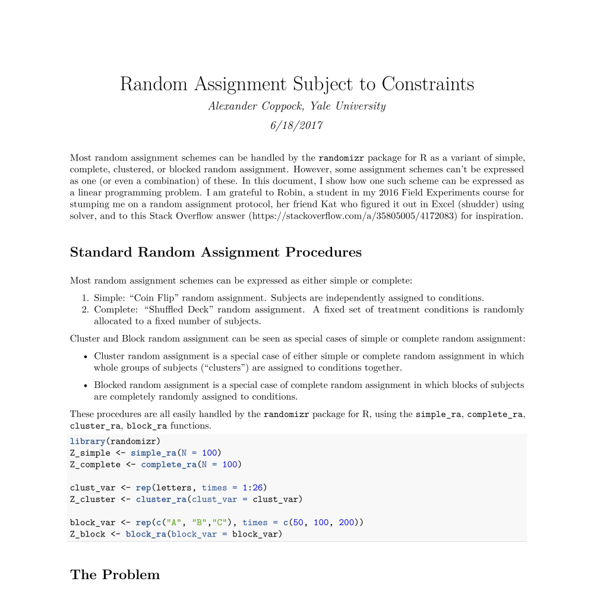

Alexander Coppock
Published Articles
Working Papers
Statistical Tools
Teaching
Working Papers
Working Papers
Political Attitudes and Behaviors
Minting Partisans: Experimental Interventions to Test Theories of Partisan Change
Working Paper, with Donald P. Green and Ethan Porter
What Have We Learned About Gender From Candidate Choice Experiments? A Meta-analysis of 30 Factorial Survey Experiments
Working Paper, with Susanne Schwartz and William Hunt
A Field Experimental Test of Vote Swapping
Working Paper
Do Belief Systems Exhibit Dynamic Constraint?
Working Paper, with Donald P. Green
A Field Experimental Test of Political Primes: Does the Constitution Affect Values, Vote Choice, or Turnout?
Working Paper, with Donald P. Green and David Kirby.
The Persistence of Survey Experimental Treatment Effects
Working Paper
Statistical Methods and Generalizability
QUIMPO: Qualitative Imputation of Missing Potential Outcomes
Working Paper, with Dipin Kaur
When to Worry About Sensitivity Bias: Evidence from 30 Years of List Experiments
Working Paper, with Graeme Blair and Margaret Moor
The Perils of Self-Assessed Attitude Change
Working Paper, with Matt Graham
Adaptive Experimental Design: Prospects and Applications in Political Science
Working Paper, with Molly Offer-Westort and Donald P. Green
Research Notes
Summary Report: The Effectiveness of Online Ads: A Field Experiment
Research Note.

Random Assignment Subject to Constraints
Research Note.
© Copyright 2017 Alexander Coppock